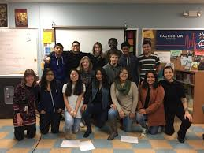

Experience
-
Robotics Club- (2014-2016)
- I’m a founding member and the first president of Excelsior’s Robotics club
- I organized meetings and headed groups that designed and coded robots
- I led the club through multiple competitions. Proving my drive and ability to deliver I led our team to win against teams with up to 20 years of experience more than us.
- I helped organize multiple community outreach events in which young students were inspired to realize the opportunities that knowledge of coding could bring. At the same time, we showed that coding is a skill that anyone can learn not just a select few.
-
Armory- (2016-present)
- I work at a local youth recreational center in Newburgh
- I help run a 12 week class that teaches students grades 2-8 how to use a program called scratch.
- It is my job to help develope lesson plans and then teach them to the students
-
Global to Local- (2016-present)
- I have helped plan and execute fund raisers across the city of newburgh
- Hour of Code (2016)- Members of Global to local volunteered at our school's event. I sold concessions, raffle tickets and taught code kids at the event.
- Ecuador- In the summer of 2017 we will be going to Quito Ecuador. There I will volunteer and help local youth. I will also learn the skills necessary to lead a community impact project in the fall.
- Community Impact project- I will be one of the project managers leading the entire 12th grade class in a project developed to reform the community. This will be a chance to refine my project management skills and gain a deeper understanding of my community.

-
Public Speaking-
- Newburgh Library Maker Fair- Members of the Robotics club went to the Newburgh Library to teach and inspire kids about coding Arduinos and Android controlled robots. I worked one on one with children as young as five to help them create circuits on the Arduino.
- Barnes and Noble Maker Fair- Members of the Robotics club went to the Barnes and Noble to teach and inspire kids about Lego Mindstorms and Java Robotics. I helped groups of kids build and explore different possibilities with Legos.
- Modern Day Slavery Awareness- I helped plan and fundraise trips to nearby middle schools where we raised awareness about modern day slavery. At the events I served as a facilitator that both cycled everyone through the various displays and answered any questions the students had. At our in school event I helped to both create the displays and set up the event. I took the initiative to learn about each display so I could speak to all of them.